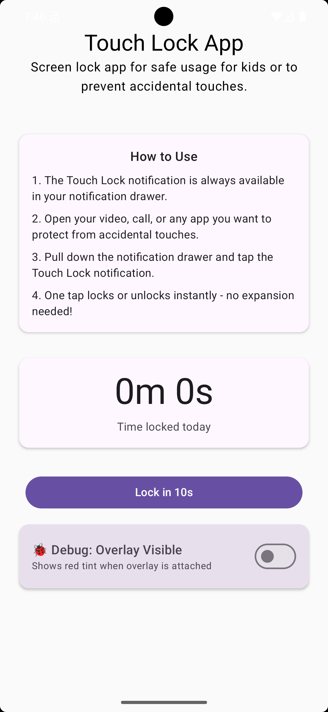
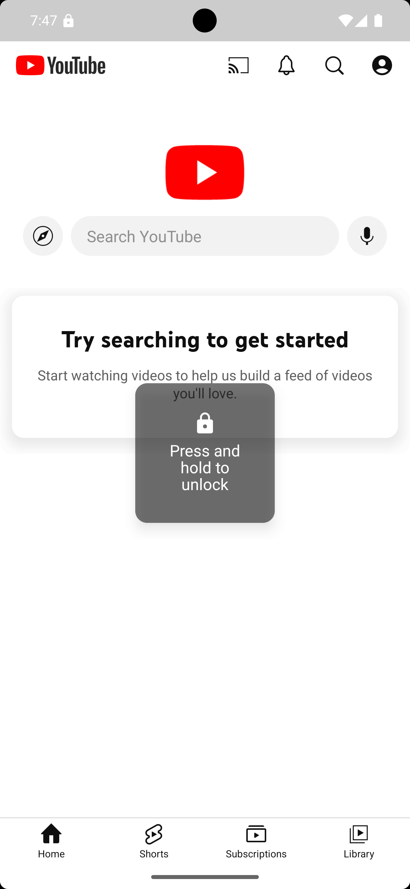
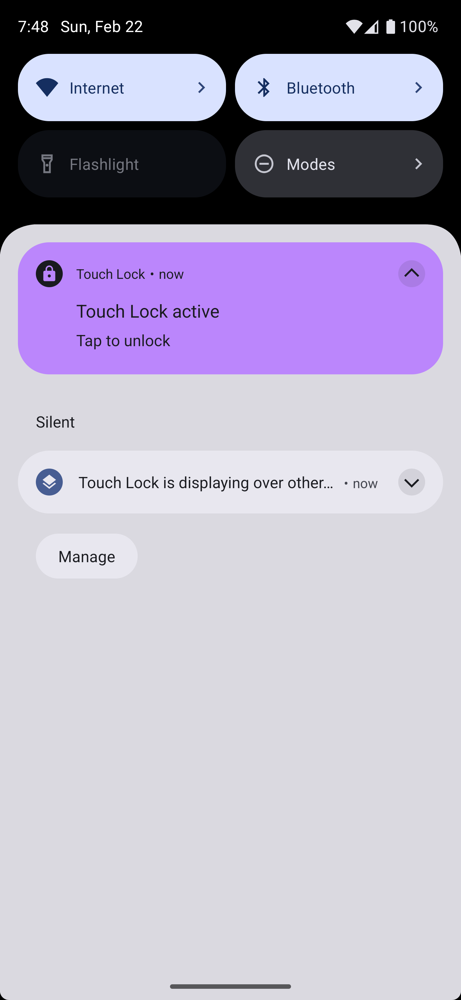

Stop little taps from ruining big moments
Touch Lock is a free, fully offline Android app that blocks touch input while keeping the screen visible — perfect for toddlers watching videos, video calls you don't want hung up, or any screen you want to hand over hands-free.



Simple, on purpose
No accounts, no ads, no kiosk mode — just a screen that stops responding to taps until you say otherwise.
Touch-blocking overlay
Prevents all screen interaction while keeping whatever's playing fully visible underneath.
One-tap from the notification
Lock or unlock instantly from a persistent notification — no need to reopen the app.
10-second countdown
A short countdown before locking, with a cancel option, so you're never caught out.
Safe unlock gesture
Double-tap to reveal the unlock handle, then hold for a second — hard for small hands to trigger by accident.
Daily usage tracking
See how long the lock has been active today, right on the home screen.
Optional Strong Lock
An extra layer that blocks Back, snaps back if the app is switched away from, and closes the notification shade — opt-in and fully disclosed.
Fully offline, always. Touch Lock makes no network requests and has no server or backend. Nothing is collected, stored, or shared — see the privacy policy for the full breakdown.
Join the Beta
Touch Lock is heading to Google Play soon. Before it goes public, Google requires a closed testing period with a handful of opted-in testers.
- Takes two minutes — no data collected beyond the email you send
- You'll get a Play Store opt-in link once testing opens
- No spam — this is a one-time invite, not a mailing list